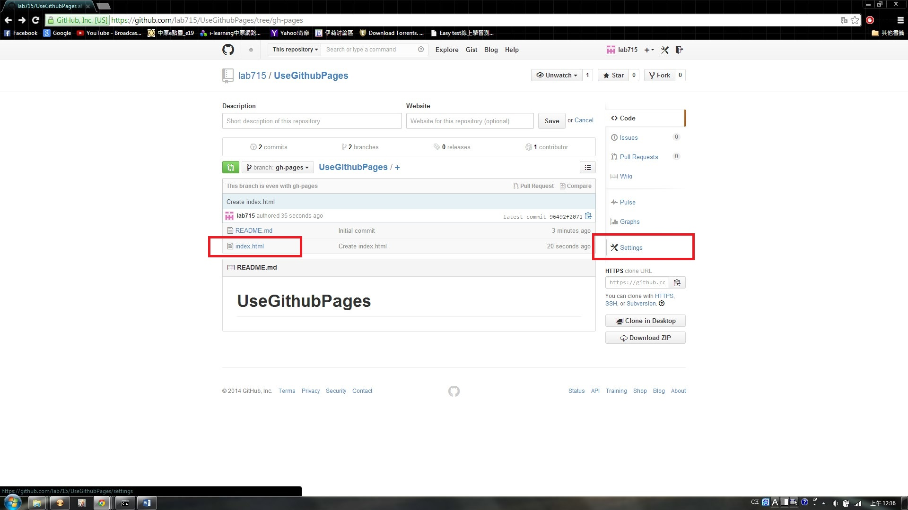

1.打開剛剛創建的project 現在要來開另外一個branch
branch 代表的意思是另外一個版本 我們要開一個當作靜態網頁的版本
branch 的名字一定要取 "gh-pages"
2.切換branch到"gh-pages"
3.新增在這個project下 新增一個檔案
那我們要當作網頁 所以就新增html
4.新增index.html 跟內容
確定更新內容 點commit new file
5.點選settings 進入設定區

6.可以看到 你個Github pages 的website
7.進入網址就可以看到你的網頁啦~
完成 開始把你的網頁貼上來!!!! GO~